Émission et perception d'un son
Thème : Ondes et signaux · C. Poirault-Gauvin
- Décrire le principe de l'émission d'un signal sonore par la mise en vibration d'un objet et l'intérêt de la présence d'une caisse de résonance.
- Expliquer le rôle joué par le milieu matériel dans le phénomène de propagation d'un signal sonore.
- Citer une valeur approchée de la vitesse de propagation d'un signal sonore dans l'air et la comparer à d'autres valeurs de vitesses couramment rencontrées.
- Mesurer la vitesse d'un signal sonore. Appliquer la relation v = d / Δt.
- Définir et déterminer la période et la fréquence d'un signal sonore, notamment à partir de sa représentation temporelle. Appliquer f = 1/T.
- Utiliser une chaîne de mesure pour obtenir des informations sur les vibrations d'un objet émettant un signal sonore.
- Utiliser un dispositif comportant un microcontrôleur pour produire un signal sonore.
- Citer les domaines de fréquences des sons audibles, des infrasons et des ultrasons.
- Relier qualitativement la fréquence à la hauteur d'un son audible.
- Relier qualitativement intensité sonore et niveau d'intensité sonore. Exploiter une échelle de niveau d'intensité sonore et citer les dangers inhérents à l'exposition sonore.
- Enregistrer et caractériser un son (hauteur, timbre, niveau d'intensité sonore) à l'aide d'un dispositif expérimental dédié ou d'un smartphone.
1. Émission d'un signal sonore
1. Vibration et production du son
Sans vibration → pas de son.
2. Rôle de la caisse de résonance
Fais glisser le curseur pour changer la taille de la caisse
3. Chaîne de mesure
2. Propagation d'un signal sonore
1. Milieu de propagation
Il ne se propage pas dans le vide.
2. Vitesse de propagation
vsolide > vliquide > vgaz | Dans l'air : v ≈ 340 m·s⁻¹
3. Animation : calculer v = d / Δt
4. Application numérique
Le tonnerre est entendu 6 s après l'éclair. La vitesse du son dans l'air est v = 340 m·s⁻¹.
À quelle distance d s'est produit l'éclair ?
Étape 1 — Quelle formule utiliser ?
Étape 2 — Application numérique (calcul) :
Étape 3 — Résultat avec unité :
Application : d = 340 × 6 = 2 040 m ≈ 2 km
5. Simulation PhET — Ondes sonores
🔬 PhET — Ondes sonores
Simulation interactive, en français. Explore les onglets « Mesure » et « Interférence ».
3. Signaux sonores périodiques
1. Signal périodique
2. Période T et fréquence f
Fréquence f : nombre de motifs par seconde — unité : hertz (Hz)
3. Calculs T ↔ f
La note « La » a une fréquence f = 440 Hz. Calcule sa période T.
Étape 1 — Formule à utiliser :
Étape 2 — Application numérique :
Étape 3 — Résultat avec unité :
Application : T = 1 / 440 ≈ 2,27 × 10⁻³ s = 2,27 ms
Un signal a une période T = 5 ms. Calcule sa fréquence f.
Étape 1 — Conversion de l'unité :
Étape 2 — Application numérique :
Étape 3 — Résultat avec unité :
Formule : f = 1 / T
Application : f = 1 / (5 × 10⁻³) = 200 Hz
4. Perception d'un son
1. Domaines de fréquence
En dessous de 20 Hz → infrason (inaudible pour l'homme) | Au-dessus de 20 kHz → ultrason (inaudible pour l'homme)
Baleine bleue : chants à ~10–40 Hz
Rhinocéros : ~8 Hz
Inaudibles pour l'homme, ils se propagent sur des dizaines de km
Piano (gamme) : 27,5 Hz – 4 186 Hz
Note La : 440 Hz
Perçus par l'oreille humaine entre 20 Hz et 20 kHz
Dauphin : 7 000–120 000 Hz
Chien : entend jusqu'à ~65 000 Hz
Utilisés aussi en médecine (échographie) et en industrie
Indique si chaque son est un infrason, un son audible pour l'homme ou un ultrason :
2. Hauteur — fréquence
f élevée → son aigu | f faible → son grave
3. Timbre et intensité
Intensité sonore : liée à l'amplitude du signal — mesurée en dB avec un sonomètre
📄 Activité documentaire
Activité 1 — Balafon
Malgré leur grande diversité, les instruments de musique émettent des sons grâce à des principes physiques similaires.
● Comment le balafon, instrument de musique traditionnel africain, peut-il produire un son ?
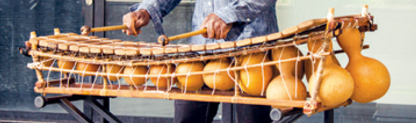
a. Regarder la vidéo du DOC.1 et expliquer à quoi correspond un signal sonore.
b. Citer les différents éléments constitutifs d'un balafon lui permettant d'émettre un signal sonore.
c. Indiquer le terme utilisé pour désigner les calebasses puis expliquer leur utilité.
À l'aide des DONNÉES, proposer une hypothèse qui permette d'expliquer les différences de taille des caisses de résonance d'un diapason, d'une guitare et d'un balafon.
Réaliser un schéma afin de décrire les différentes étapes nécessaires à la création et à l'émission d'un signal sonore émis par un balafon, des vibrations des lames de bois jusqu'aux oreilles d'un auditeur.
📄 Activité documentaire
Activité 2 — Explosion dans l'espace
Dans le film Star Wars, épisode IV : un nouvel espoir du réalisateur George Lucas, l'explosion de l'Étoile Noire dans l'espace s'accompagne d'un bruit caractéristique.
● Le bruit de cette explosion est-il réellement perceptible en l'absence d'un milieu matériel ?
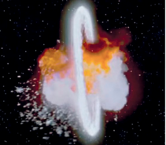
a. Dans quels environnements (eau, air, espace) se trouve l'Étoile Noire dans Star Wars ?
b. Dans quels environnements (eau, air, espace) se trouvent les musiciens sur le bateau, ainsi que la baleine présentés dans le DOC.1 ?
c. Préciser comment un objet ou un animal émet un signal sonore.
d. D'après le DOC.2, citer deux exemples concrets de déformation d'un milieu permettant de créer un signal sonore.
a. Comment le chant des baleines se propage-t-il sous l'eau ? Comment le son émis par des instruments de musique se propage-t-il dans l'air ?
b. Indiquer si un signal sonore peut se propager dans l'acier ; dans le vide. Justifier les réponses.
Réaliser une synthèse permettant d'expliquer pourquoi la scène d'explosion de l'Étoile Noire dans le film Star Wars, épisode IV : un nouvel espoir n'est pas réaliste du point de vue de la propagation du son.
📄 Activité documentaire
Activité 3 — Comparaison de vitesses
Les vitesses de déplacement des objets qui nous entourent ont des valeurs souvent très différentes.
● Que vaut la vitesse de propagation d'un signal sonore dans l'air par rapport à celle d'un avion ou par rapport à celle de la lumière ?
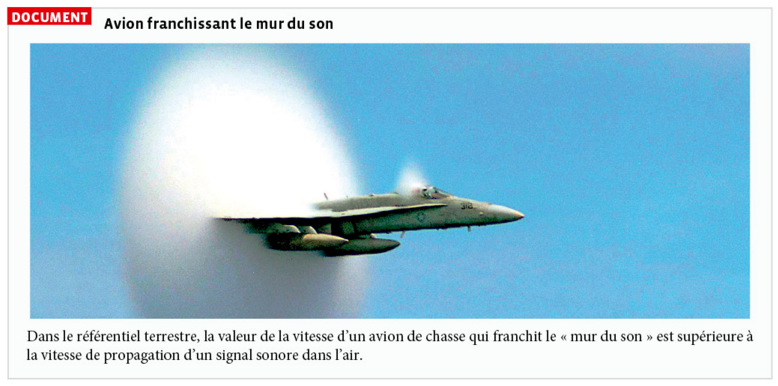
Rechercher les valeurs moyennes de la vitesse d'un marcheur, d'un vélo, d'une voiture, d'un train et d'un avion, ainsi que celles de la propagation d'un signal sonore et de la lumière dans l'air. Compléter la première ligne du tableau ci-dessous en précisant l'unité utilisée pour chaque valeur.
a. Convertir toutes les valeurs de vitesses de la première ligne en m·s⁻¹ et compléter la deuxième ligne du tableau.
b. Donner l'ordre de grandeur de chacune de ces vitesses en m·s⁻¹ et compléter la troisième ligne du tableau.
c. Calculer le rapport de chacune de ces vitesses par rapport à la vitesse de propagation d'un signal sonore dans l'air, et compléter la dernière ligne du tableau.
| Grandeur | Marcheur | Vélo | Voiture | Train | Avion | Signal sonore dans l'air | Lumière |
|---|---|---|---|---|---|---|---|
| Valeur moyenne de la vitesse (unité à préciser) |
|||||||
| Valeur de la vitesse en m·s⁻¹ | |||||||
| Ordre de grandeur (m·s⁻¹) | |||||||
| Rapport à la vitesse de propagation d'un signal sonore dans l'air |
Réaliser une synthèse permettant de comparer la vitesse de propagation d'un signal sonore dans l'air avec les autres valeurs de vitesse du tableau.
🔬 Activité expérimentale
Activité 4 — Mesure de la vitesse de propagation du son Histoire des sciences
Depuis l'Antiquité, les scientifiques ont compris que le son ne se propage pas instantanément et ils ont toujours cherché à mesurer cette vitesse de propagation.
● Comment mesurer actuellement la vitesse de propagation du son dans l'air ?
![À gauche, DOCUMENT : présentation de la mesure historique de la vitesse du son réalisée en 1738 entre les buttes Montmartre et Montlhéry, distantes de 29 km, avec une carte ancienne de la région parisienne (durée mesurée : 86 s pour un air à 8 °C). À droite, PROTOCOLE EXPÉRIMENTAL ACTUEL : photographie de deux micros reliés à une interface d'acquisition, avec les étapes du protocole utilisant une distance d1 = 40 cm puis d2 = 10 cm entre les micros pour mesurer le retard entre la réception d'un son bref par chacun d'eux.](p237.png)
🧪 Simulation : reproduire le protocole expérimental
Choisis une distance entre les micros, puis clique sur « Produire un son » pour simuler un claquement de mains. La simulation mesure le retard Δt et calcule la vitesse de propagation v = d / Δt. Recommence plusieurs fois : comme lors d'une vraie mesure, chaque essai donne une valeur légèrement différente.
| Essai | Distance d | Δt mesuré | v = d / Δt |
|---|
Cette simulation reproduit de façon simplifiée les incertitudes de mesure liées à la résolution temporelle du dispositif d'acquisition ; les valeurs obtenues sont donc réalistes mais pas strictement identiques à une mesure réelle.
Tu peux utiliser un vrai tableur (Excel, LibreOffice Calc), ou répondre directement en ligne avec l'outil guidé ci-dessous : il contient déjà les mesures de la classe.
🧮 Tableur guidé — réponds directement aux questions 1.b, 1.c et 2.a
Ce mini-tableur reprend les mesures de vitesse obtenues par la classe. Il t'explique comment construire les histogrammes, calculer les moyennes et les écarts-types, puis comparer les deux séries — formule par formule, comme dans un vrai tableur.
a. Mettre en œuvre le protocole expérimental (ou utiliser la simulation ci-dessus) et exprimer les valeurs v₁ et v₂ des vitesses de propagation d'un signal sonore mesurées dans l'air.
b. Collecter les résultats des mesures réalisées par l'ensemble des élèves afin de les représenter à l'aide d'un tableur par deux histogrammes associés aux deux séries de mesures.
🧮 Réponds directement dans le tableur guidé ci-dessus (étape 1).
c. À l'aide du tableur, déterminer les vitesses moyennes de propagation v̄₁ et v̄₂ du signal sonore dans l'air, ainsi que les écarts-types s₁ et s₂ pour chacune des deux séries de mesures.
🧮 Réponds directement dans le tableur guidé ci-dessus (étape 2).
a. L'écart-type est une mesure caractérisant la dispersion des résultats de mesure. Quelle est la distance entre les micros qui conduit au plus petit écart-type ? En déduire la distance entre les micros conduisant à la plus faible dispersion des résultats concernant la vitesse du son.
🧮 Réponds directement dans le tableur guidé ci-dessus (étape 3, débloquée après l'étape 2).
b. Quelle distance entre les micros permet la mesure la plus précise possible de la vitesse de propagation d'un signal sonore ? Justifier la valeur importante de la distance utilisée entre les deux expérimentateurs dans l'expérience réalisée en 1738.
1.a. Pour d₁ = 40 cm, on obtient par exemple Δt ≈ 1,18 ms, donc v₁ = d₁ / Δt = 0,40 / (1,18 × 10⁻³) ≈ 3,4 × 10² m·s⁻¹. Pour d₂ = 10 cm, on obtient par exemple Δt ≈ 0,29 ms, donc v₂ = 0,10 / (0,29 × 10⁻³) ≈ 3,4 × 10² m·s⁻¹. Chaque binôme obtient une valeur légèrement différente : c'est cette dispersion des mesures qui est étudiée dans la suite de l'activité.
1.b. Chaque binôme reporte sa valeur de v₁ (colonne d₁ = 40 cm) et de v₂ (colonne d₂ = 10 cm) dans le tableur, qui construit alors automatiquement les histogrammes des deux séries de mesures de la classe.
1.c. Les fonctions MOYENNE() et ECARTYPE() du tableur permettent de calculer, pour une classe, par exemple : v̄₁ ≈ 341,0 m·s⁻¹ avec s₁ ≈ 3,2 m·s⁻¹ pour d₁ = 40 cm ; v̄₂ ≈ 341,5 m·s⁻¹ avec s₂ ≈ 4,9 m·s⁻¹ pour d₂ = 10 cm.
2.a. L'écart-type le plus petit est s₁ (obtenu pour d₁ = 40 cm) : s₁ ≈ 3,2 m·s⁻¹ < s₂ ≈ 4,9 m·s⁻¹. C'est donc la plus grande distance entre les micros (d₁ = 40 cm) qui conduit à la plus faible dispersion des résultats.
2.b. Le dispositif d'acquisition mesure Δt avec une incertitude à peu près constante, liée à sa résolution temporelle. Plus la distance d est grande, plus la durée Δt à mesurer est grande, et plus cette incertitude devient faible en proportion de Δt : la vitesse v = d / Δt est alors mesurée avec une meilleure précision. C'est exactement pour cette raison qu'en 1738, les scientifiques ont choisi une distance énorme (29 km) entre les deux buttes : cela leur a permis de mesurer une durée de plusieurs dizaines de secondes (86 s), facilement mesurable avec une simple horloge, et donc d'obtenir une valeur de la vitesse du son bien plus précise qu'avec une faible distance.
🔬 Activité expérimentale
Activité 5 — Notes de musique, période et fréquence
Un clavier de synthétiseur permet de jouer différentes notes de musique : chacune correspond à un son différent, plus ou moins aigu ou grave.
● Comment le clavier d'un synthétiseur permet-il d'associer à chaque note une fréquence et une période ?
Fréquence f : nombre de périodes par seconde — unité : hertz (Hz)
a. Ouvrir l'animation PCCL et jouer plusieurs notes sur le clavier du synthétiseur. Compléter le tableau ci-dessous avec 4 notes de ton choix : le nom de la note, la fréquence f lue sur l'animation, puis la période T = 1/f calculée.
| Note jouée | f lue sur l'animation (Hz) | T = 1/f calculée (ms) |
|---|---|---|
a. Comparer la note la plus grave et la note la plus aiguë de ton tableau : laquelle a la fréquence la plus élevée ? Laquelle a la période la plus courte ?
b. À partir des valeurs de ton tableau, énoncer la relation qui existe entre la fréquence f d'une note et sa période T.
1.a. Exemple de tableau obtenu avec l'animation (les valeurs dépendent des notes choisies) : La3 → f ≈ 440 Hz → T = 1/440 ≈ 2,27 ms ; Do4 → f ≈ 523 Hz → T = 1/523 ≈ 1,91 ms ; Do3 → f ≈ 262 Hz → T = 1/262 ≈ 3,82 ms ; Sol3 → f ≈ 392 Hz → T = 1/392 ≈ 2,55 ms.
2.a. La note la plus aiguë (fréquence la plus élevée, ex. Do4) a la période la plus courte ; la note la plus grave (fréquence la plus faible, ex. Do3) a la période la plus longue.
2.b. La fréquence et la période sont inversement proportionnelles : f = 1/T (et T = 1/f). Plus T est court, plus f est grande, et inversement.
3. QCM : 1. Plus élevée — 2. Augmente — 3. ≈ 2 ms — 4. À la durée entre deux états semblables.
📄 Activité documentaire
Activité 6 — Fréquence des signaux sonores
Les ultrasons sont utilisés dans de nombreux domaines, de l'industrie à la médecine. Ils sont à l'origine de nombreuses applications extrêmement intéressantes, alors qu'ils ne peuvent pas être perçus par l'oreille humaine.
● Qu'en est-il des autres espèces animales ?
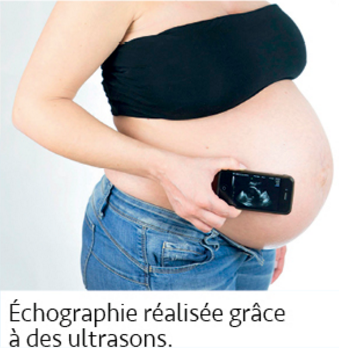
![DOCUMENT : Fréquences des signaux perçus par l'oreille humaine et celle d'autres mammifères. Schéma en frise du spectre de fréquences de 0 à 20×10⁶ Hz avec trois domaines : Infrasons (0 à 20 Hz), Sons audibles par les humains (20 Hz à 20 000 Hz), Ultrasons (au-delà de 20 000 Hz). Éléphant et taupe perçoivent les infrasons. Chat et chien perçoivent jusqu'à environ 40 000 Hz. Chauve-souris et dauphin perçoivent jusqu'à environ 160 000 Hz. Les applications médicales des ultrasons utilisent des fréquences de l'ordre de 10⁶ à 20×10⁶ Hz. Texte : l'oreille humaine perçoit des signaux sonores de fréquences comprises entre environ 20 Hz (son le plus grave) et 20 000 Hz (son le plus aigu). Par rapport à l'audition humaine, on qualifie d'infrasons les signaux dont la fréquence est inférieure à 20 Hz : imperceptibles à l'homme, mais certains animaux comme la taupe ou l'éléphant peuvent les percevoir, détectant ainsi les prémices de tremblements de terre. On qualifie d'ultrasons les sons inaudibles pour l'homme dont la fréquence est supérieure à 20 000 Hz : un chien ou un chat entend jusqu'à environ 40 000 Hz (une octave de plus que l'homme), une chauve-souris ou un dauphin jusqu'à environ 160 000 Hz (trois octaves de plus). D'après cochlea.org.](p254-2.png)
a. Citer les domaines de fréquences des infrasons, des sons audibles par les êtres humains et des ultrasons. Relever pour chacun de ces domaines un animal capable de percevoir ces signaux.
b. Justifier que les signaux utilisés pour une échographie ne sont pas perçus par les dauphins. Donner un autre exemple d'utilisation médicale des ultrasons.
a. Exprimer en kilohertz (kHz) les limites supérieures des champs auditifs des êtres humains, des chats et des chauves-souris.
b. Exprimer en mégahertz (MHz) les fréquences des ultrasons les plus souvent utilisées dans les applications médicales.
Réaliser une synthèse permettant de comparer les champs auditifs des différents animaux, dont les êtres humains.
📄 Activité documentaire
Activité 7 — Nuisances sonores
Dans les métropoles, les nuisances sonores sont de plus en plus fréquentes.
● Comment caractériser les nuisances sonores et comment les limiter ?
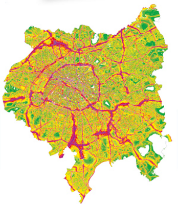
![DOC.1 : Sources des nuisances sonores dans l'agglomération parisienne. 82 % des habitants du Grand Paris sont soumis à des niveaux d'intensité sonore supérieurs à 55 dB. La principale source de cette pollution sonore est la circulation routière : 25 % des Parisiens subissaient des nuisances liées à la route de niveau d'intensité sonore supérieur à 60 décibels (dB), 6 % des Parisiens seraient exposés à des bruits de niveau d'intensité sonore supérieur à 70 dB. Selon l'Organisation mondiale de la santé (OMS), l'exposition à des bruits de niveau d'intensité sonore supérieur ou égal à 55 dB dans son cadre de vie peut induire des effets néfastes sur la santé. Une exposition sonore à un niveau d'intensité sonore élevé peut entraîner une perte temporaire ou permanente d'audition, la présence d'acouphènes, etc. Une exposition prolongée à un niveau d'intensité sonore plus faible peut également présenter des risques auditifs. Tableau des principales sources de nuisances sonores d'une automobile selon sa vitesse v : pour v ≤ 50 km·h⁻¹, organes mécaniques du véhicule (moteur, transmission, freins, échappement), arrêt et démarrage aux feux de circulation ; pour v > 50 km·h⁻¹, contact entre les pneus et le revêtement routier. D'après bruitparif.fr. DOC.2 : Échelle linéaire ou non linéaire, avec un lien vidéo (sirius.nathan.fr) montrant une échelle graduée linéairement de -20 à 25. DONNÉES : Échelle des intensités sonores I et des niveaux d'intensité sonore L. Le niveau d'intensité sonore L, exprimé en décibel (dB), est défini à partir de l'intensité sonore I perçue par un récepteur sonore. Le seuil d'audibilité est fixé à un niveau d'intensité sonore L₀ = 0 dB, correspondant à une intensité sonore I₀ = 10⁻¹² watt par mètre carré (W·m⁻²). Échelle graduée de I = 10⁻¹² W·m⁻² (L = 0 dB, seuil d'audibilité) à I = 10² W·m⁻² (L = 140 dB, avion au décollage), avec repères intermédiaires : vent léger (L ≈ 20 dB, I = 10⁻¹⁰ W·m⁻²), chambre à coucher (L ≈ 30 dB, I = 10⁻⁹ W·m⁻²), salle de classe/automobile (L ≈ 50-60 dB, I = 10⁻⁷ à 10⁻⁶ W·m⁻²), seuil de risque (L ≈ 85-90 dB, I = 10⁻⁴ W·m⁻²), klaxon/seuil de danger (L ≈ 100-110 dB, I = 10⁻² W·m⁻²), concert (L ≈ 120 dB, I = 1 W·m⁻²), seuil de douleur (L ≈ 130 dB, I = 10 W·m⁻²), avion au décollage (L = 140 dB, I = 10² W·m⁻²).](p255-2.png)
a. Indiquer la principale source des nuisances sonores dans l'agglomération parisienne.
b. Noter la valeur Lrisque du niveau d'intensité sonore correspondant au seuil de risque indiqué dans les DONNÉES.
c. Déterminer les valeurs d'intensité sonore des bruits auxquels sont soumis 6 % et 25 % des Parisiens.
d. Expliquer pourquoi l'échelle des niveaux d'intensité sonore présentée dans les DONNÉES est linéaire.
a. Expliquer pourquoi la valeur Lrisque ne correspond pas à celle indiquée par l'OMS dans le DOC.1.
Simuler une réunion de quartier entre différents acteurs intervenant sur la problématique des nuisances sonores, afin d'essayer de trouver des solutions pour les limiter.
Exercice 1 — Vitesse de propagation du son
Un randonneur voit un éclair puis entend le tonnerre 4,0 s plus tard. On donne la vitesse du son dans l'air : v = 340 m·s⁻¹. Calculer la distance d entre le randonneur et l'orage.
Étape 1 — Quelle formule utiliser ?
Étape 2 — Application numérique (calcul) :
Étape 3 — Résultat avec unité :
Application : d = 340 × 4,0 = 1360 m ≈ 1,36 km
Exercice 2 — Retour sur l'ouverture de chapitre
Un avion de chasse se déplace à la vitesse de valeur v = 2 400 km·h⁻¹.
Donnée : en première approximation, on compare les valeurs des vitesses des avions à la vitesse de propagation du son dans l'air dans les conditions usuelles (v(son) = 340 m·s⁻¹), sans tenir compte de la différence due à l'altitude élevée à laquelle volent les avions.
a. Convertir la valeur de cette vitesse en m·s⁻¹.
Étape 2 — Résultat avec unité :
b. Calculer le rapport de la valeur de la vitesse de cet avion de chasse par la vitesse de propagation du son dans l'air dans les conditions usuelles.
Étape 2 — Résultat (sans unité) :
c. On dit qu'un tel avion « vole à Mach 2 ». Proposer une explication de cette expression.
d. La vitesse de croisière d'un Airbus A380 vaut 900 km·h⁻¹. Déterminer si cet avion de ligne effectue un vol « subsonique » (vitesse inférieure à la vitesse de propagation du son dans l'air) ou « supersonique ».
b. rapport = 667 / 340 ≈ 2,0
c. « Mach 2 » signifie que l'avion vole à une vitesse égale à 2 fois la vitesse du son dans l'air.
d. v(A380) = 900 / 3,6 = 250 m·s⁻¹ < 340 m·s⁻¹ → vol subsonique.
Exercice 3 — Calculer une durée de propagation
On donne la vitesse du son dans l'air : v = 340 m·s⁻¹.
Étape 1 — Quelle formule utiliser pour calculer une durée de propagation Δt ?
a. Un signal sonore se propage dans l'air sur une distance d = 340 m. Déterminer la durée de propagation Δt de ce signal.
b. Un signal sonore se propage dans l'air sur une distance d = 1 km. Exprimer puis calculer la durée de propagation Δt de ce signal.
Conversion :
Résultat avec unité :
a. Δt = 340 / 340 = 1,0 s
b. d = 1 km = 1000 m → Δt = 1000 / 340 ≈ 2,9 s
Exercice 4 — Communiquer avec des dauphins
Pour communiquer, les dauphins émettent des sifflements, tellement aigus qu'ils sont parfois indétectables par l'oreille humaine.
Exercice 5 — Exploiter une échelle
L'échelle ci-contre permet de relier l'intensité sonore et le niveau d'intensité sonore à différents phénomènes.
a. Relever sur l'échelle les niveaux d'intensité sonore et les intensités sonores correspondant à un vent léger et au seuil de danger.
b. Expliquer en quoi une exposition à un niveau d'intensité sonore de 85 dB peut présenter des risques auditifs.
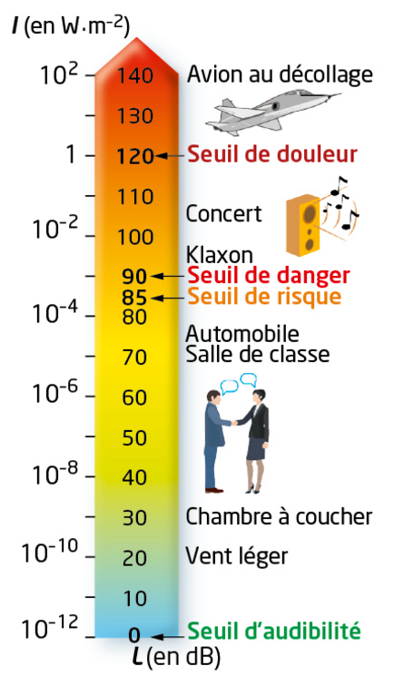
Exercice 1 — Mesurer une période
Déterminer la période du signal périodique, dont la représentation temporelle est la suivante.
Étape 1 — Comment lire la période sur ce graphique ?
Étape 2 — Résultat avec unité :
Période : T = 5 − 1 = 4 ms
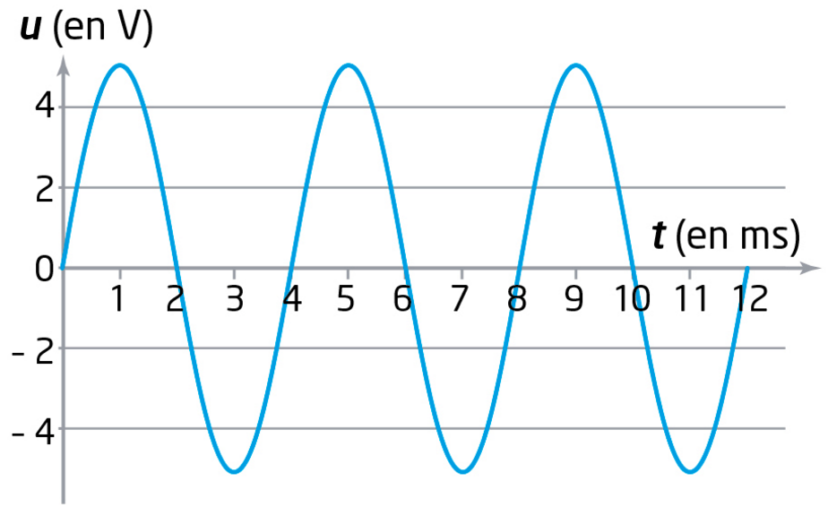
Exercice 2 — Faire vibrer une lame de métal
Un signal sonore est enregistré à l'aide d'un micro et d'une interface d'acquisition. La représentation temporelle obtenue est la suivante.
Ce signal est-il périodique ? Justifier la réponse.
Relever la période T du signal sur le graphique :
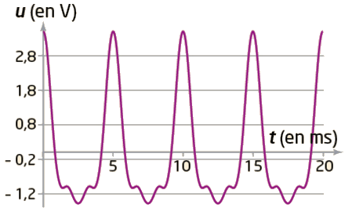
L'enregistrement d'un signal sonore périodique à l'aide d'un micro relié à un dispositif d'acquisition conduit à la représentation temporelle de l'exercice 30 ci-dessus.
1. Déterminer la fréquence f de ce signal sonore.
Étape 2 — Conversion et calcul :
Étape 3 — Résultat avec unité :
2. Le son a été émis par des vibrations, de fréquence f₀ = 200,4 Hz, d'une lame de métal. La fréquence mesurée est-elle compatible avec la fréquence des vibrations de la lame de métal ?
Partie B — 1. f = 1/T = 1/(5×10⁻³) = 200 Hz
Partie B — 2. f ≈ 200 Hz est très proche de f₀ = 200,4 Hz (écart ≈ 0,2 %, lié à la précision de lecture) : les deux valeurs sont compatibles.
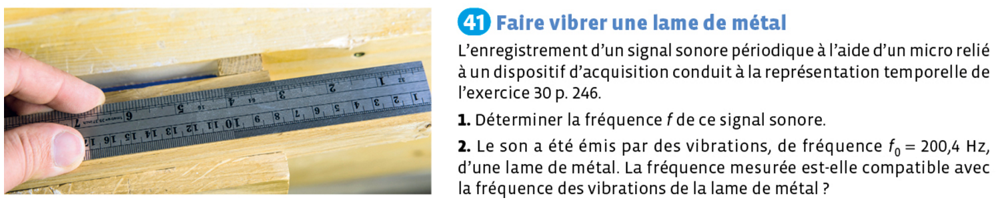
Exercice 3 — Passer à l'octave suivante
Le La₃ correspond à un signal sonore de fréquence f(La₃) = 440 Hz. La fréquence associée à une note double lorsque la note est à l'octave suivante.
a. Déterminer la fréquence du La₄.
Étape 2 — Résultat avec unité :
b. Montrer que les fréquences 395 Hz et 98 Hz peuvent être associées à une même note à des octaves différentes.
b. 98 × 2 × 2 = 392 Hz ≈ 395 Hz (à l'écart de mesure/arrondi près) : les deux fréquences correspondent à la même note, à deux octaves d'écart.
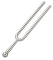
Exercice 4 — Comparer deux sons
On enregistre à l'aide d'un micro et d'un dispositif d'acquisition les sons produits par deux instruments de musique différents jouant une même note : le Si₄ de fréquence 988 Hz.
1. Décrire les points communs attendus sur les représentations temporelles des deux signaux correspondants. Justifier la réponse.
Calculer la période T commune aux deux signaux :
2. Décrire les différences prévisibles entre ces deux représentations temporelles. Justifier la réponse.
2. La période est identique, mais la forme du motif (timbre) diffère selon l'instrument : c'est ce qui permet de distinguer les deux sons à l'oreille bien qu'ils jouent la même note.
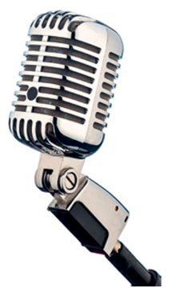
Exercice 1 — Sonar des dauphins
Les dauphins communiquent entre eux avec des ultrasons de la même manière que les êtres humains avec des sons audibles. Ils utilisent également les ultrasons pour localiser des obstacles, le fond marin ou des proies.
Données :
• la vitesse de propagation des ultrasons dans l'eau salée à 10 m de profondeur est égale à 1 530 m·s⁻¹ ;
• les vitesses de propagation des sons audibles et des ultrasons sont identiques.
DOCUMENT — Biosonar
Les dauphins sont capables d'émettre et de capter des salves ultrasonores très brèves et puissantes appelées « clics ». Ces clics, espacés de 220 ms, se réfléchissent par exemple sur le fond marin et sont captés à leur retour par le dauphin. La perception du retard de l'écho lui fournit des informations concernant l'aspect du fond marin ou la présence d'une masse importante (bateau ou nourriture).
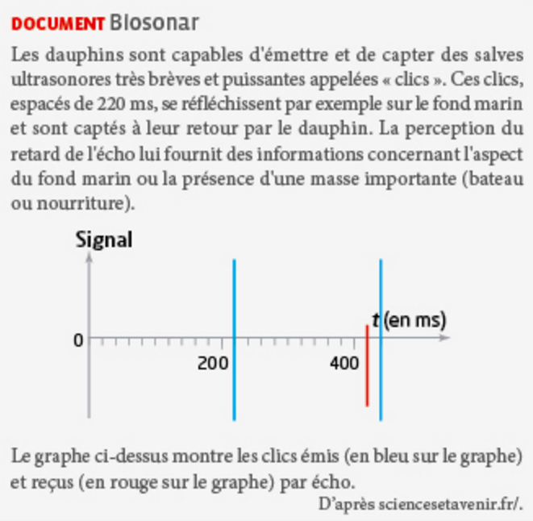
Le graphe ci-dessus montre les clics émis (en bleu) et reçus (en rouge) par écho. D'après sciencesetavenir.fr.
a. Calculer le rapport entre la vitesse de propagation du son ou des ultrasons dans l'eau salée et dans l'air. Conclure.
Étape 2 — Résultat (sans unité) :
b. Déterminer sur le graphe du DOCUMENT la durée entre deux émissions de clics. Comparer ce résultat à la valeur indiquée dans le texte.
c. Mesurer la durée Δt séparant l'émission d'un clic et la réception de son écho.
d. En supposant que le dauphin se déplace horizontalement et qu'il émet des clics ultrasonores dans la direction verticale, en déduire la distance d à laquelle se trouve le fond marin responsable de cet écho.
Étape 2 — Résultat avec unité :
b. Durée entre deux clics lue sur le graphe ≈ 220 ms, identique à la valeur du texte.
c. Δt (émission → écho) ≈ 200 ms.
d. d = v × Δt / 2 = 1530 × 0,200 / 2 ≈ 153 m.
Exercice 2 — Fréquence de vibration d'une corde
Afin de déterminer la fréquence de vibration d'une corde de violon, on frotte cette corde à vide (Mi à 660 Hz) devant un micro relié à un système d'acquisition. Le signal sonore capté par le micro est converti en signal électrique, qui est analysé par le système d'acquisition pour mesurer sa fréquence.
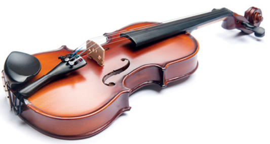
DOCUMENT — Histogramme représentant la série de mesures de fréquence réalisées
420 mesures de la fréquence f du signal ont été réalisées.
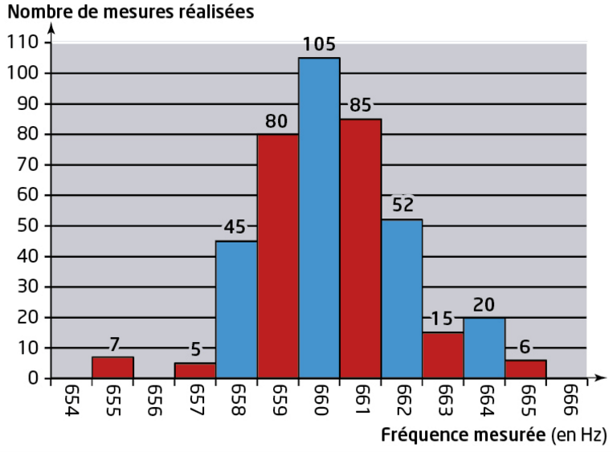
Un tableur donne les résultats suivants concernant cette série de mesures :
– fréquence moyenne f̄ = 660,30 Hz ;
– écart-type s = 0,66 Hz.
1. Schématiser l'expérience réalisée.
Décris avec tes mots la chaîne des éléments et des signaux mis en jeu, de la corde jusqu'au système d'acquisition.
2. Donner les relations entre la fréquence du signal électrique, la fréquence du signal sonore et la fréquence de vibration de la corde du violon.
3. Rappeler les définitions de la période T et de la fréquence f d'un signal périodique.
4. Combien de mesures ont pour résultat une fréquence dont la valeur se trouve dans l'intervalle [f̄ − 2s ; f̄ + 2s] ?
Étape 1 — Bornes de l'intervalle :
Étape 2 — Nombre total de mesures dans cet intervalle (lecture de l'histogramme) :
5. On réalise une seconde série de 20 mesures de fréquence : on obtient une valeur moyenne f̄′ = 663,45 Hz et un écart-type s′ = 2,50 Hz. Sachant que l'écart-type est une mesure caractérisant la dispersion des résultats, indiquer quelle série de mesures conduit à une plus grande dispersion.
6. L'incertitude-type est définie par u(f) = s / √N, avec N le nombre de mesures. Justifier que pour une même valeur de l'écart-type s, l'incertitude-type diminue si le nombre de mesures augmente, puis calculer l'incertitude-type pour la série de 420 mesures.
Calcul de u(f) pour la série de 420 mesures :
2. f(signal électrique) = f(signal sonore) = f(vibration de la corde) : la fréquence se conserve tout au long de la chaîne.
3. T = durée d'un motif du signal ; f = nombre de motifs par seconde.
4. [f̄ − 2s ; f̄ + 2s] = [658,98 ; 661,62] Hz → fréquences 659, 660 et 661 Hz → 80 + 105 + 85 = 270 mesures.
5. s′ = 2,50 Hz > s = 0,66 Hz : la seconde série (20 mesures) est la plus dispersée.
6. u = s/√N : à s fixé, √N croît avec N, donc u décroît. Pour N = 420 : u = 0,66/√420 ≈ 0,032 Hz.
Exercice 3 — Souffler n'est pas jouer
Le but de cette épreuve est d'analyser et d'expérimenter l'une des causes probables de l'abandon de la pratique de la flûte à bec dans le domaine de l'enseignement : la justesse des notes produites associée au contrôle du souffle.
DOC.1 — Hauteur d'une note
La justesse d'une note est associée à la précision de la hauteur de la note produite. La tenue d'une note est associée à une note dont la hauteur ne varie pas dans le temps. La hauteur d'une note de musique correspond à la fréquence de l'onde sonore associée à cette note.
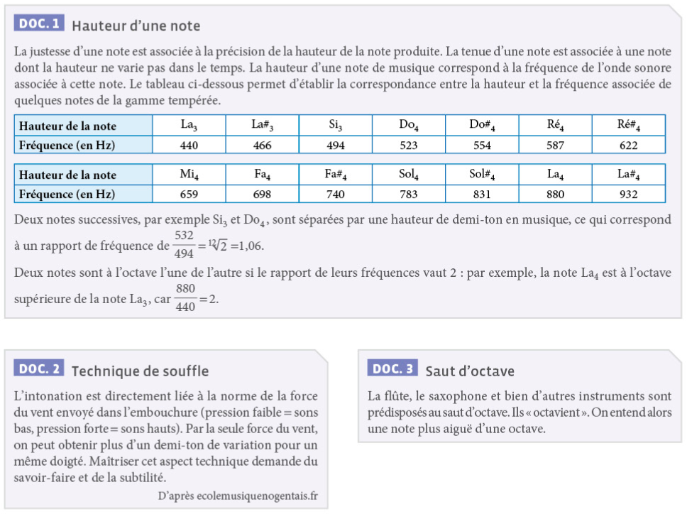
Deux notes successives (écart d'un demi-ton) : rapport de fréquence ≈ 1,06. Deux notes à l'octave l'une de l'autre : rapport de fréquence = 2 (par exemple, f(La₄)/f(La₃) = 880/440 = 2).
1a. Pour les DOC.2 et 3, identifier les effets possibles d'un mauvais contrôle du souffle sur la hauteur de la note produite et les conséquences sur la fréquence associée.
1b. Proposer un protocole expérimental permettant l'acquisition (ou l'enregistrement) de sons produits par la flûte et la vérification du seul des deux effets identifiés précédemment.
Plusieurs protocoles sont recevables : décris le tien avec tes mots (instrument, matériel utilisé, grandeur mesurée, comparaison réalisée).
2. Mettre en œuvre le protocole.
Réalise l'expérience proposée, puis note ci-dessous le résultat obtenu (fréquence mesurée, observation...).
3. Réaliser une synthèse permettant de préciser la technique utilisée pour réaliser l'expérience et les mesures effectuées, puis formuler une conclusion cohérente avec le problème.
🔓 Escape Game
La Partition
Ignorant tout du solfège mais excellent en physique, vous tentez de déchiffrer les premières notes d'une partition de musique.
Pour cela, vous allez devoir résoudre cinq énigmes.
● Y parviendrez-vous ?
🔓 Escape Game
Le Signal Perdu
Un chercheur du labo a capté un signal sonore inexpliqué. Tous ses instruments sont verrouillés par des codes de sécurité. Pour débloquer le matériel et identifier l'origine du signal, tu dois résoudre des énigmes sur la physique du son.
Deux modes disponibles : Mission Rapide (15 min, 3 énigmes) ou Enquête Complète (50 min, 7 salles + pièce secrète).
● Le laboratoire compte sur toi !
Thème Ondes et signaux — Physique-Chimie 2nde — ©C.Poirault-Gauvin
Émission d'un son
- Un son est produit par la vibration d'un objet
- La caisse de résonance amplifie le son sans apport d'énergie supplémentaire
Propagation
- Besoin d'un milieu matériel ; ne se propage pas dans le vide
- v = d / Δt
Signaux périodiques
- Signal périodique : répétition régulière d'un même motif
- T = durée d'un motif (s) ; f = 1/T (Hz)
Perception d'un son
- Audible : 20 Hz à 20 000 Hz (infrasons en dessous, ultrasons au-dessus)
- Hauteur ↔ fréquence ; timbre ↔ forme du signal ; intensité ↔ amplitude (dB)
- Caisse de résonance
- Enceinte creuse qui entre en vibration avec la source sonore et amplifie le son, sans apport d'énergie supplémentaire.
- Chaîne de mesure
- Source sonore → microphone (convertit le son en signal électrique) → oscilloscope/logiciel → analyse (T, f…).
- Hauteur d'un son
- Liée à la fréquence : f élevée → son aigu ; f faible → son grave.
- Infrasons / ultrasons
- Audibilité humaine : 20 Hz à 20 000 Hz. En dessous de 20 Hz : infrasons. Au-dessus de 20 kHz : ultrasons.
- Intensité sonore
- Liée à l'amplitude du signal ; se mesure en décibels (dB) à l'aide d'un sonomètre.
- Milieu de propagation
- Un signal sonore a besoin d'un milieu matériel pour se propager ; il ne se propage pas dans le vide.
- Niveau d'intensité sonore (dB)
- Noté L, exprimé en décibels (dB) à partir de l'intensité sonore I. Seuil d'audibilité : 0 dB. Seuil de risque : ≈ 85-90 dB. Seuil de danger : ≈ 90-110 dB. Seuil de douleur : ≈ 130 dB.
- Période T et fréquence f
- T : durée d'un motif (en s). f : nombre de motifs par seconde (en Hz). f = 1/T, T = 1/f.
- Signal périodique
- Signal sonore dont l'enregistrement présente la répétition régulière d'un même motif.
- Signal sonore
- Produit par la vibration d'un objet : sans vibration, pas de son.
- Timbre
- Identité sonore d'un instrument ou d'une voix, liée à la forme du signal (permet de distinguer deux sons de même hauteur).
- Vitesse de propagation
- v = d / Δt : distance parcourue par le signal sonore divisée par la durée du trajet.
🎬 Qu'est-ce qu'un son ?
Paul Olivier · 3 min 45
🎬 Qu'est-ce qu'un son ?
C'est pas sorcier · 2 min 12
🎬 Le signal sonore
Paul Olivier · 2 min 16
🎬 Son, haut-parleur, air
Paul Olivier · 0 min 35
🎬 MT00271 — Maquette célérité du son dans l'air
Pierron · 4 min 05
🎬 Visualiser les sons
Unisciel · 2 min 04
🗂️ Flashcards interactives
Hatier.
⬇️ Audacity
Logiciel d'enregistrement son.
⬇️ Piano virtuel
01net.
🔗 Troubles de l'audition
INSERM.
Exercices du manuel
Propagation : n°23 p.244 – n°29 p.245 – n°47 p.249 – n°43 p.248
Signaux périodiques : n°30 p.246 – n°36 p.246 – QCM p.246 – n°41 p.247 – n°48 p.250
Perception : p.260 n°14-15 – p.261 n°22 – p.263 n°30 – p.264 n°32 – p.265 n°34